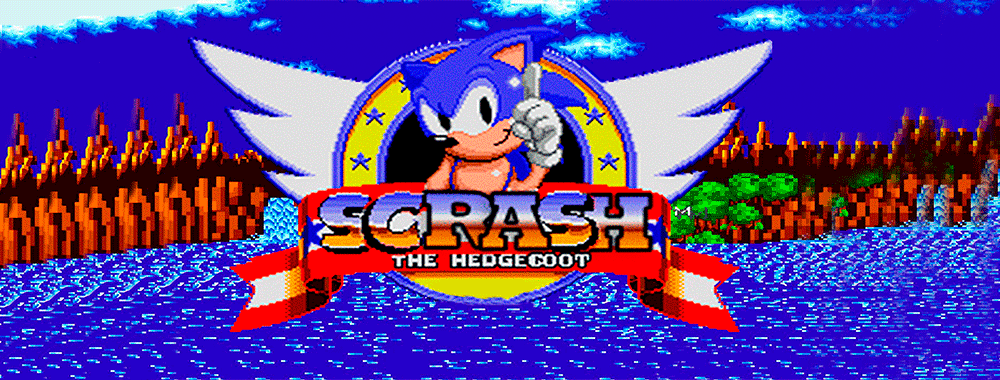

<div id="carrosel_primario" class="carousel slide" data-bs-ride="carousel">
    <div class="carousel-indicators" id="carrosel_home_slides">
        <button type="button" data-bs-target="#carrosel_primario" data-bs-slide-to="0" class="active" aria-current="true" aria-label="Slide 1"></button>
    </div>
    <div class="carousel-inner estilo_carrosel" id="carrosel_home_div">
        <div class="carousel-item active" data-bs-interval="5000">
            
            <div class="carousel-caption">
                <h5>Welcome to Scrash's Website</h5>
                <p>Here you find the best plugins of Perfect Scrash</p>
            </div>
        </div>
        <script>Get_Carrosel_Home();</script>
    </div>
    <button class="carousel-control-prev" type="button" data-bs-target="#carrosel_primario"  data-bs-slide="prev">
        <span class="carousel-control-prev-icon" aria-hidden="true"></span>
        <span class="visually-hidden">Previous</span>
    </button>
    <button class="carousel-control-next" type="button" data-bs-target="#carrosel_primario"  data-bs-slide="next">
        <span class="carousel-control-next-icon" aria-hidden="true"></span>
        <span class="visually-hidden">Next</span>
    </button>
</div>
<br/>

<!-- Cards -->
<div id="scrash_cards"></div>
<script>AddCardItens();</script>